FITFLOW
КОРОЛЕВСКИЙ КОМПЛЕКС
Мобильное приложение видеокурса «Королевский комплекс + Скульптор» для тех, кто хочет подтянуть фигуру, выпрямить спину и ухаживать за лицом дома, без зала и инвентаря. Все тренировки, видеоуроки, меню питания и замеры результатов собраны в одном приложении.
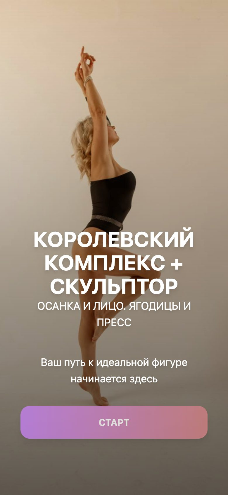
О курсе
Программы созданы Натальей Макаренко — тренером, который на собственном примере показывает, что возраст — просто цифра, а результат возможен в любом возрасте.
Каждая тренировка — концентрат эффективных упражнений, проверенных сотнями женщин. Видеокомплексы адаптированы под домашние условия: не нужны зал, сверхинвентарь и опыт.
Акцент не только на рельефе тела, но и на здоровье, красоте, осанке и уверенности — поэтому в программу входят уход за лицом и меню питания.
При первом запуске показываются два обязательных видео: приветствие и «Важно перед тренировками».
Экраны приложения
Стартовый экран
Обложка курса «Королевский комплекс + Скульптор» и кнопка «Старт».
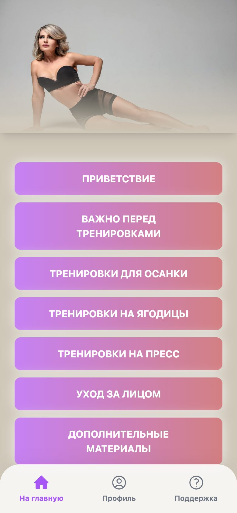
Главное меню
Приветствие, важное перед тренировками, осанка, ягодицы, пресс, уход за лицом и дополнительные материалы. Внизу вкладки: главная, профиль, поддержка.
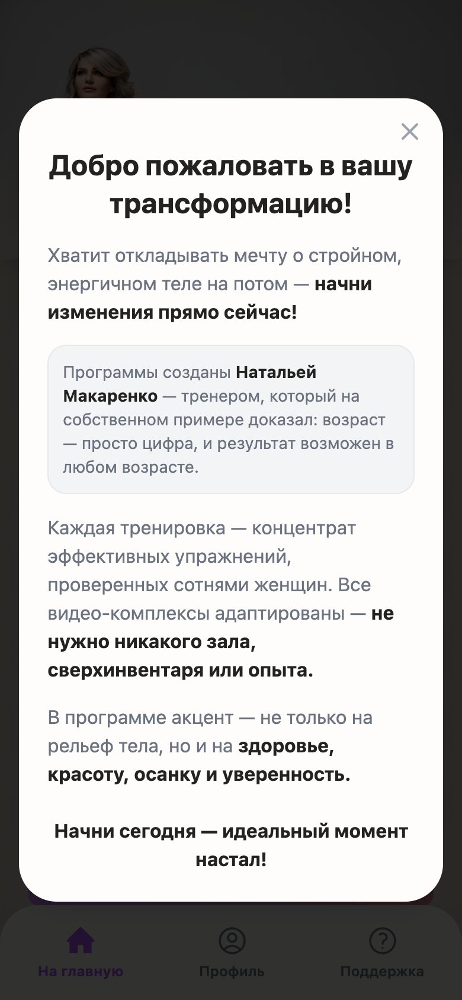
Приветствие
Окно «Добро пожаловать в вашу трансформацию»: о тренере, о принципах курса и два обязательных видео.
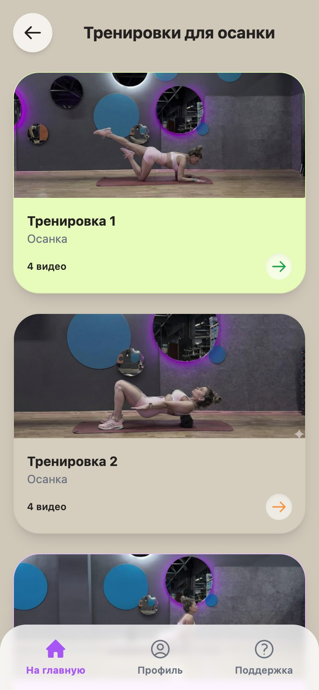
Тренировки для осанки
7 тренировок, в каждой по 4 упражнения в отдельных видео.
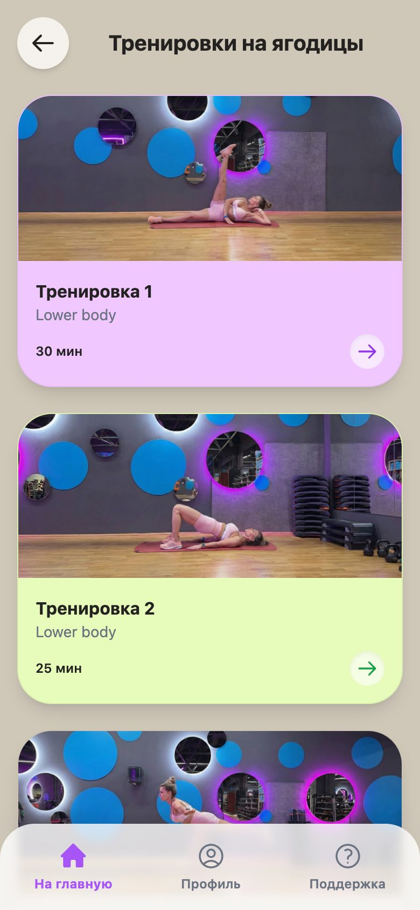
Тренировки на ягодицы
8 тренировок по 20–40 минут: lower body и full body. На карточке видно время и категорию.
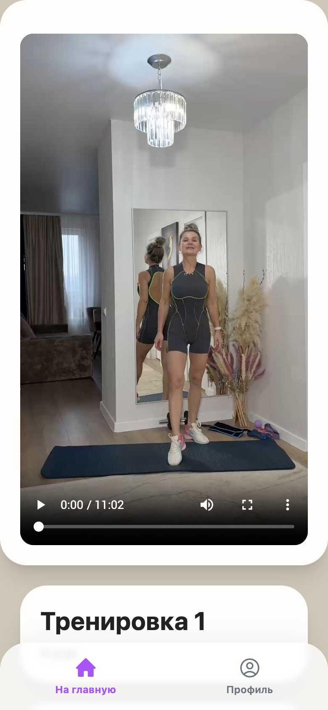
Экран тренировки
Вертикальное видео во весь экран телефона и название тренировки с количеством упражнений.
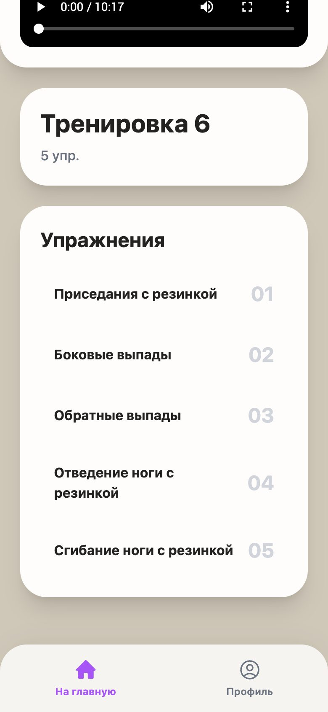
Список упражнений
Под видео — нумерованный список упражнений. Здесь тренировка 6 с резинкой: приседания, боковые и обратные выпады, отведение и сгибание ноги.
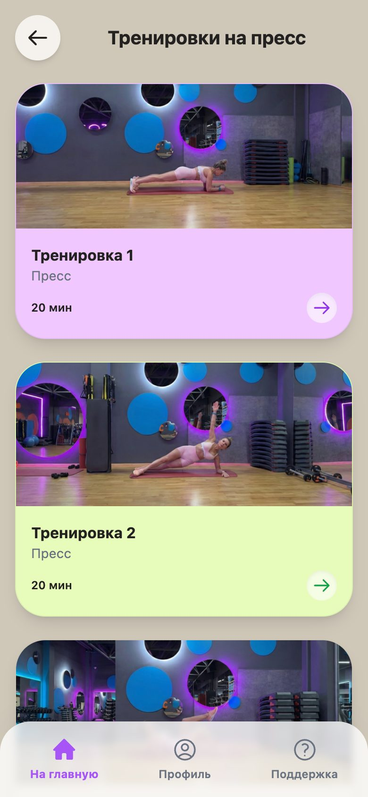
Тренировки на пресс
8 тренировок по 20–25 минут: вакуум, планки, скручивания, «велосипед», «мёртвый жук», «скалолаз».
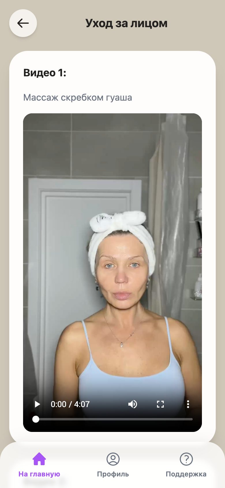
Уход за лицом
Раздел из 10 видеоуроков: массаж скребком гуаша, самомассаж и гимнастика, умывание, маски, массажёры.
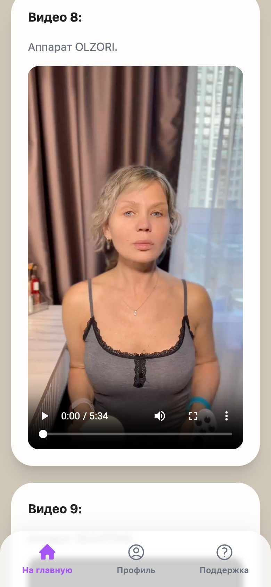
Уроки по аппаратам
Отдельные видео по аппаратам OLZORI, GEZATONE и MAMI и урок по массажёрам. В конце — бонусное видео со средствами, которыми пользуется автор.
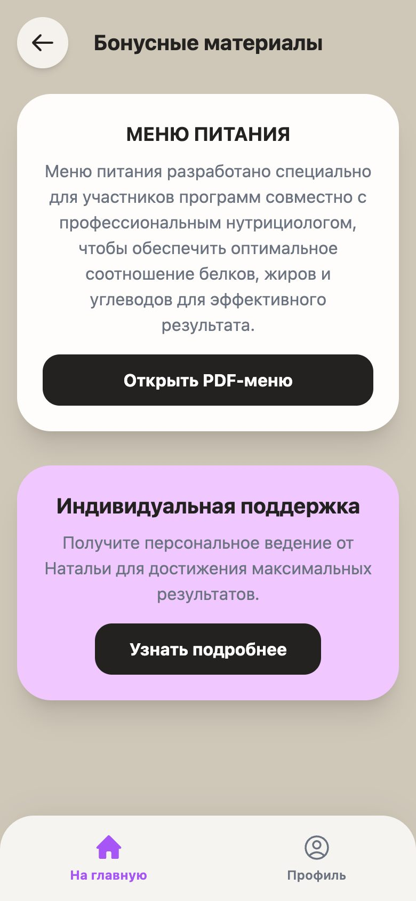
Бонусные материалы
Меню питания, составленное вместе с нутрициологом, открывается как PDF. Есть переход к индивидуальной поддержке.
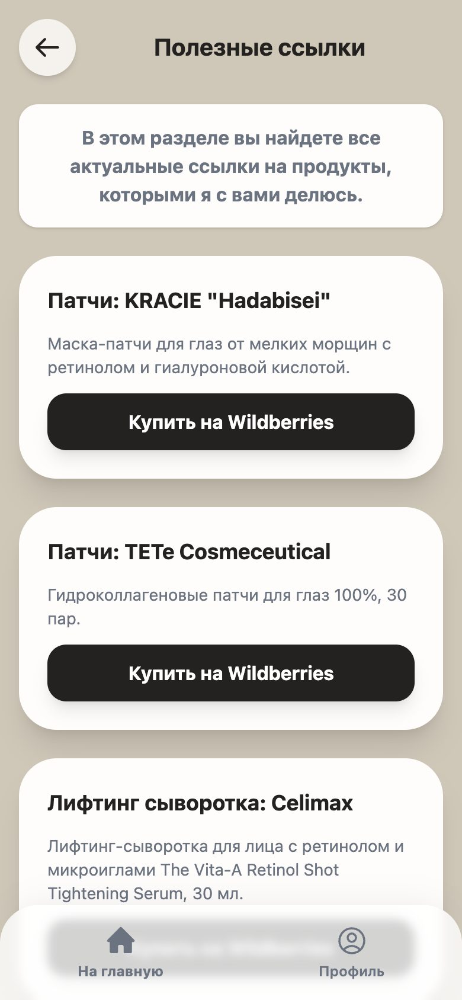
Полезные ссылки
25 рекомендованных товаров — патчи, сыворотки, кремы, тональные средства, тушь — с кнопками покупки на Wildberries, Ozon и в «Золотом яблоке».
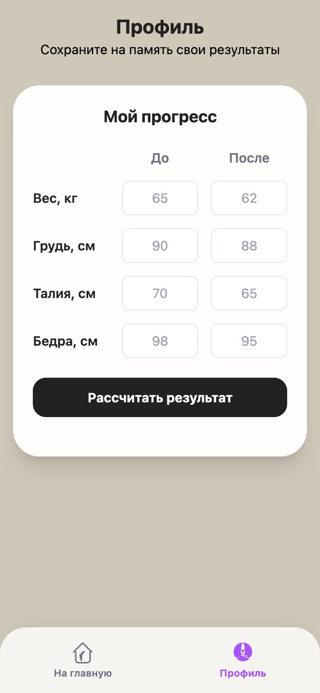
Профиль и прогресс
Вес, грудь, талия и бёдра «до» и «после»: приложение рассчитывает результат.
Что внутри курса
Осанка
Каждая тренировка состоит из четырёх упражнений, и у каждого упражнения своё видео. Упражнения выполняются так, как показано и описано в ролике.
- Всего 28 видео в 7 тренировках
- Каждое упражнение — отдельный ролик
- Пояснения к упражнению — рядом с видео
Ягодицы
Основа — нижняя часть тела, одна тренировка полного тела. Подходы указаны прямо в списке, например «Приседания — 3 по 20». Часть упражнений выполняется с резинкой или со стулом.
- Приседания «колодец» и «пружинка»
- Выпады: боковые, обратные, болгарский
- Румынская тяга
- Ягодичный мостик и перекаты
- Приседания плие и реверанс
- «Журавлик», «фрогги», махи
Пресс
Прицельная работа на мышцы живота и корпуса: от вакуума и планок до косых и обратных скручиваний.
- Вакуум и планки (в том числе боковая и динамичная)
- Русский твист, «лодочка», «стол»
- «Велосипед», «ножницы», «скалолаз»
- «Мёртвый жук», диагонали, опускание ног
- Косые и обратные скручивания
Уход за лицом
Это целый раздел, а не одно видео: массаж, гимнастика, уход за кожей и работа с аппаратами. Каждый урок идёт отдельным роликом, а в конце — бонусное видео со средствами, которыми пользуется автор, и кнопка перехода к списку покупок.
- 1. Массаж скребком гуаша
- 2. Самомассаж, гимнастика для лица
- 3. Умывание, массаж
- 4. Осанка — упражнение
- 5. Уход за кожей: маски, упражнения, массаж
- 6. Уход за лицом, массаж
- 7. Урок по массажёрам
- 8. Аппарат OLZORI
- 9. Аппарат GEZATONE
- 10. Аппарат MAMI
- Бонус: средства, которыми пользуюсь я
Питание и поддержка
В «Дополнительных материалах» лежит меню питания, разработанное с профессиональным нутрициологом: оптимальное соотношение белков, жиров и углеводов. Рядом — переход к индивидуальной поддержке, а на вкладке «Поддержка» — связь через Telegram.
Профиль и ссылки
В профиле вводятся вес, грудь, талия и бёдра «до» и «после», приложение считает разницу. «Полезные ссылки» — подборка косметики и аксессуаров с кнопками покупки: 14 позиций на Wildberries, 10 в «Золотом яблоке» и 1 на Ozon.